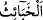
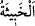
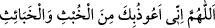
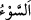
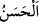

“hüküm”den maksad, Allah Teâlâ hakkında anlayış sâhibi olmaktır.Yine Dâvud (a.s.)
hakkındaki: “Allah ona hükümdarlık ve hikmet verdi ve ona dilediğini öğretti.” (el-
Bakara, 2/251) âyeti de aynı husûsa delâlet eder. Allah mülk/hükümdarlık, hikmet ve
ilmi birbirinden ayırmıştır.
Şu halde “Lût’a … ilim verdik” buyruğunun mânâsı; dîn işleri, şer‘î ve dînî kurallara
dâir ona faydalı bilgiler verdik, demektir.
“Ve onu, çirkin işler yapan bir kentten kurtardık.” Mü’tefike, yâni daha önce geçtiği
üzere altı üstüne getirilen yedi şehirden en büyüğü olan Sodom’dan kurtardık.
“__WORD__ __WORD__’nin çoğuludur. el-Habîse, kötülüğü ve çirkinliği sebebiyle
hoşlanılmayan şey demektir. Îtikadda bâtıl, sözde yalan ve fiillerde çirkin olan şeyleri
de içine alır. Hadiste geçen “__WORD__[191] şeytanların erkeklerinden
ve dişilerinden sana sığınırım, demektir.
Âyetteki çirkin işlerden (el-habâis) murad, livata/oğlancılıktır. Burada “kent”e isnad
edilen sıfat, aslında halkının yaptıklarıdır. Böylece halkının fiili, şehre yüklenmiştir.
“Gerçekten onlar, yoldan çıkan” yâni fâsık; küfür ve isyan bataklığına dalmış ve
bunda fazlasıyla ileri gitmiş, ilâhî ferman dâiresinden dışarı çıkan “kötü bir millet
idiler.” Râgıb der ki: “__WORD__ dünyevî ve uhrevî işlerden; nefsî, bedenî mal ve can kaybı
gibi hâricî hallerden insanı gamlandıran şeydir. Kötü ve çirkin olan her şey, bu kelime
ile ifâde edilebilir. “__WORD__ (güzel)”in zıddıdır.”
Âyette kötü arkadaştan kurtulmanın ilâhî mevhibelerden, kötü arkadaşlara
yaklaşmanın ise ilâhî yardımın kesilmesi demek olduğuna işâret vardır.
Sakın kötü dosttan, arkadaştan, sakın
Ey Rabbimiz, bizi cehennem azabından koru
Mesnevî’de de şöyle denilir:
Bir bahçede sarımsak ve gebre otu gibi her sebzenin
Ayrı bir evleği vardır
Her bitki kendi cinsiyle birlikte bir evleğe ekilir
Yetişmesi, olgunlaşması için gerektiğince sulanır
Sen, safran evleğindeysen safran ol
Başkalarıyla karışma
Ey safran, yeşerip olmak için su iç
Helvaya karışmak için hazır hâle gel
Şalgam evleğine ağzını uzatma
Çünkü o seninle aynı özellik ve tabiatta değildir
Sen ayrı evleğe, o ayrı evleğe ekilmiştir
Çünkü Allah’ın arzı geniştir